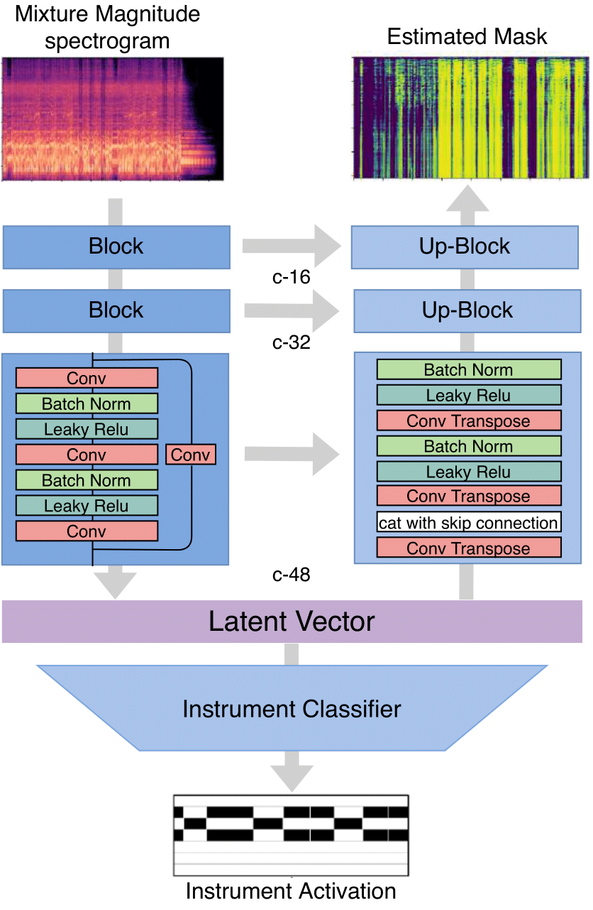
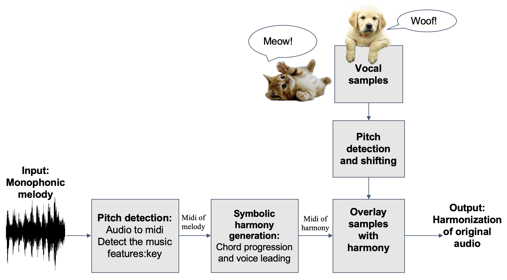
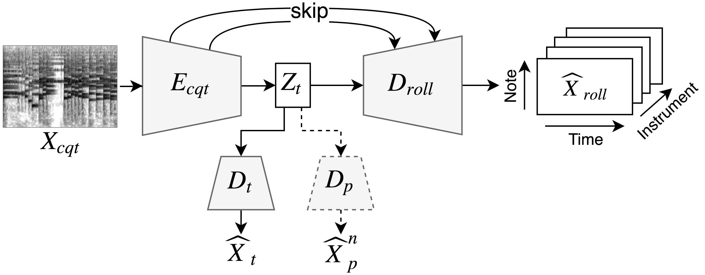
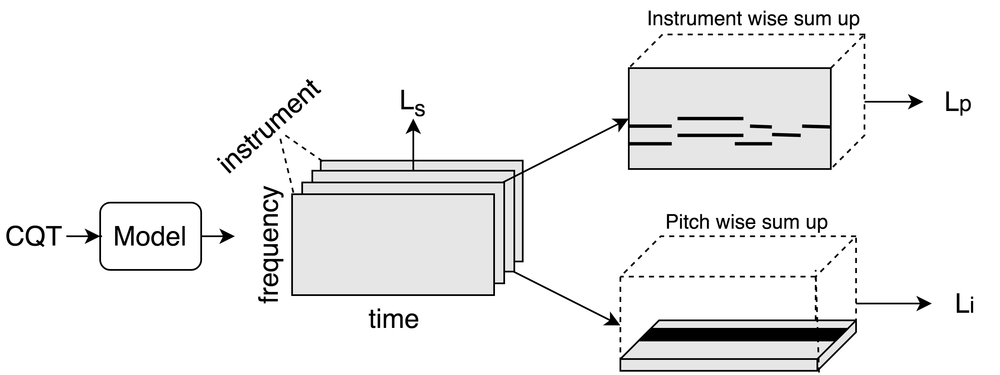
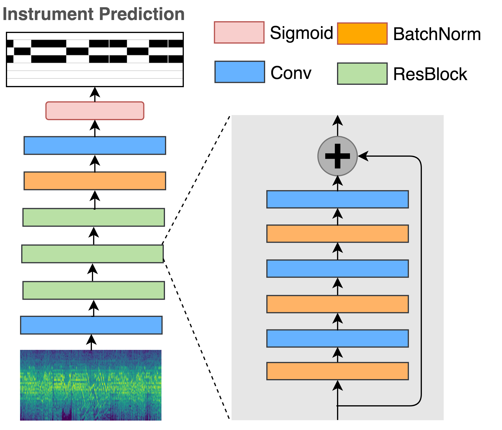
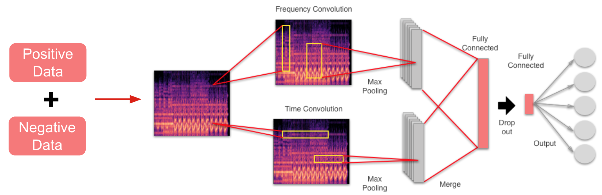

Music source separation is a core task in music informationretrieval which has seen a dramatic improvement in the pastyears. Nevertheless, most of the existing systems focusexclusively on the problem of source separation itself andignore the utilization of other —possibly related— MIRtasks which could lead to additional quality gains. In thiswork, we propose a novel multitask structure to investigateusing instrument activation information to improve sourceseparation performance. Furthermore, we investigate oursystem on six independent instruments, a more realisticscenario than the three instruments included in the widely-used MUSDB dataset, by leveraging a combination of theMedleyDB and Mixing Secrets datasets. The results showthat our proposed multitask model outperforms the baselineOpen-Unmix model on the mixture of Mixing Secrets andMedleyDB dataset while maintaining comparable perfor-mance on the MUSDB dataset.
Project
Instrument activity aware source separation
Animal Harmonizer
Imagine now you have many recordings with you singing melody line or playing melody on instruments. It would be boring to share these monophonic recordings with friends. To solve this problem, we created a machine learning system to which users can input a melody line. The system will automatically transcript the melody line and harminize the melody line for you. To be more fun, we also provide an animal synthesizer so that users can choose which animals to sing the harminics for you!
Music Disentanglement
Paper 1 Paper 2 Github Website
For some applications we need a feature representation that is not sensitive to the changes in other features. For example, in cover song identification or query by humming we only need pitch information while in singer identification we only need timbre information. As a result, in this music disentanglement project, we proposed a deep auto-encoder model with adversarial training to learn timbre and pitch invariant representations. By using the learned timbre representation as the input feature, we can achieve state-of-the-art frame-level instrument prediction result. Moreover, by replacing the timbre representation, the model can also achieve composition music style transfer.
Multitask Learning
 In this project, we propose a specialized multitask model to explore the relation between pitch and instrument information. This model can predict pitch, instrument, and pianorolls at the same time. By jointly predicting the labels, the model achieves better performance than other single-task models.The predicted pianorolls can also be used to recognize the instrument that plays each individual note event and achieve multi-instrument transcription.
Instrument Recognition
Paper Github Website Slide Poster
Instrument Recognition project focuses on polyphonic frame-level instrument tagging. The model will predict the presence of instruments in each time step so that we can know the starting time and ending time of each instrument. We proposed to use pitch to guide the learning of instrument tags, with the premise that doing so informs the model the notes that are active per frame, and also encourages the model to learn relative rates of energy buildup in the harmonic partials of different instruments. The model is trained with MusicNet Dataset.
The second stage of this project is to increase instrument categories. We collected a large-scale synthesized dataset, Musescore Dataset, to train the model. Musescore Dataset contains over 330,000 pieces of songs with their related audio and MIDI pairs.
Music Auto Tagging
 The goal of this project is to give machine the ability to classify music pieces into different tags. The tags can be genre, mood, and context. We analyze music signal from both audio and lyrics. More information is listed bellow: